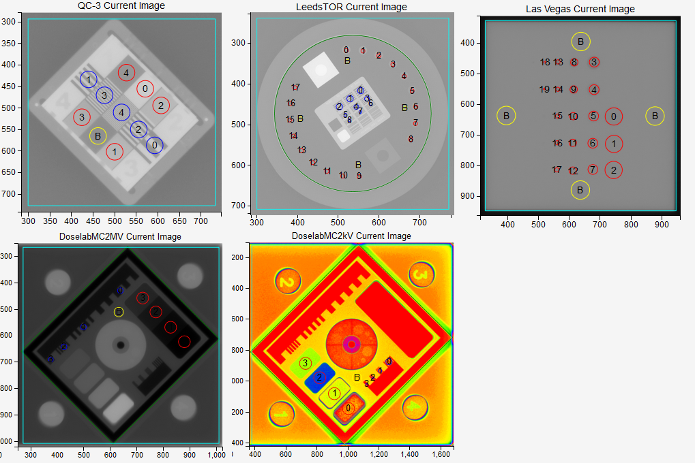
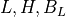
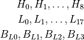
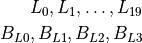
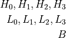
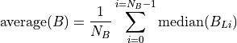
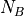
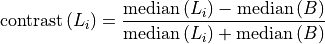
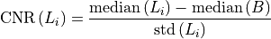
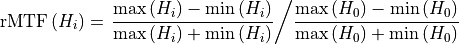

Planar imaging module¶
This module is used to test the constancy of two-dimensional MV or kV image. All five phantoms recognized by Pylinac can be used:
Standard Imaging QC3
Leeds TOR 18
Las Vegas
DoselabMC2MV
DoselabMC2kV
In order to be able to compare image quantifiers with the baseline, you have the option of saving a reference image into the server database. This image can then be analyzed at the same time as the currently acquired image.
Options¶
- Image
The acquired image. If Analyze reference? is unchecked, only this image will be analyzed.
- Phantom
A list of available phantoms recognized by Pylinac. Always pick the correct phantom.
- Machine/Beam
Pick the right machine and beam if you want to use a reference image or save the final measurements to the database.
- Imager
Here you can select the reference image of the phantom for a particular machine (imager). See Administration section for more details about how to add reference images to the server. If you don’t have a reference image prepared, then skip this setting, and untick the Analyze reference? checkbox.
- Clip box
Here you can enter the size of the central portion of the image beyond which pixel values will be set to background signal. If you don’t want to clip the image, put 0.
- Force angle
Here you can force the angle of the phantom. This is useful when you see that Pylinac has wrongly detected the angle.
- Show bounding box?
If checked, a bounding box will be drawn around the phantom, and the image will be zoomed-in.
- Invert image?
Check this if you need to invert the image.
How to use the module¶
Acquire your image in such a way that Pylinac will be able to analyze it.
To set a reference for comparison have your engineers optimize image quality, then acquire a good image that satisfies your clinical demands. This image can then be downloaded from Orthanc and stored into the server database for future use.
Select the appropriate Phantom. If the reference image is available, it will show up in the dropdown menu (machine/beam). If not, then you can work without them. In this case uncheck Analyze reference?.
Regions of interest (ROIs)¶
Pylinac will find several ROIs on each phantom. The following image shows ROIs for the five phantoms. Red circles mark those ROIs that are used for studying contrast (low frequency contrast resolution), blue circles are those ROIs that are used for studying MTF (high frequency contrast resolution) and yellow circles are the background ROIs. Color coding on this image is valid only for this demonstration.
We denote low contrast, high contrast, and background ROIs with

Where L stands for low frequency ROI, H for high frequency ROI and B is the background.
The QC3 phantom has 5 high frequency ROIs, 5 low frequency ROIs, and one background ROI:

The LeedsTOR phantom has 9 high frequency ROIs, and 18 low frequency ROIs with corresponding 4 background ROIs.

The Las Vegas phantom has 20 low frequency ROIs and 4 background ROIs.

The DoselabMC2MV and DoselabMC2kV phantoms have 4 low frequency ROIs, 4 high frequency ROIs and one background ROI:

Once ROIs are defined, pixel values within can be extracted from the image. Random noise is not calculated according to [2], instead the standard deviation of pixel values within low contrast or background ROIs is used.
A note on colors¶
All background ROIs will be colored yellow. All low frequency and high frequency ROIs that have passed the tolerance will be colored blue. Any ROI that does not pass the tolerance will be colored red.
How things are calculated¶
Read 1 and 2 so that you will be able to understand the analysis. Where there are more than one background ROIs, they are average into one value like this:

Where  is the number of background ROIs.
Low-frequency contrast for each L is calculated like this:

The green line on the low-frequency plot represents the low_threshold defined in administration. If the contrast is above the green line, the ROI has passed the test.
Contrast-to-noise ratio is defined as

Relative modulation transfer function is calculated as

Note that it is normalized to 1 for the first high-frequency region. The green line on the plot represents the high_threshold defined in administration. If the points are above the green line, then the lines in the corresponding region can be resolved. If the high-frequency regions are not positioned correctly, the plot of the rMTF will have spikes.
f30, f40, f50 and f80 are line pairs per millimeter calculated for 30%, 40%, 50% and 80% rMTF.
Median contrast is calculated as the median of contrast values for all low-frequency regions.
Median CNR is calculated as the median of all CNR values.